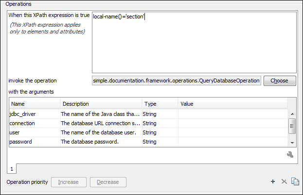

Example 2 - Operations with Arguments - Report from Database Operation
In this example, an operation is created that connects to a relational database and executes an SQL statement. The result should be inserted in the edited XML document as a table. To make the operation fully configurable, it will have arguments for the database connection string, the user name, the password and the SQL expression.
- Set up a sample project following this set of instructions. The framework project is oxygen-sample-framework.
-
Create the class simple.documentation.framework.QueryDatabaseOperation. This
class must implement the ro.sync.ecss.extensions.api.AuthorOperation
interface.
import ro.sync.ecss.extensions.api.ArgumentDescriptor; import ro.sync.ecss.extensions.api.ArgumentsMap; import ro.sync.ecss.extensions.api.AuthorAccess; import ro.sync.ecss.extensions.api.AuthorOperation; import ro.sync.ecss.extensions.api.AuthorOperationException; public class QueryDatabaseOperation implements AuthorOperation{ -
Now define the operation's arguments. For each of them, you will use a
Stringconstant representing the argument name:private static final String ARG_JDBC_DRIVER ="jdbc_driver"; private static final String ARG_USER ="user"; private static final String ARG_PASSWORD ="password"; private static final String ARG_SQL ="sql"; private static final String ARG_CONNECTION ="connection";
-
You must describe the argument name and type. To do this, implement the
getArguments method that will return an array of argument descriptors:
public ArgumentDescriptor[] getArguments() { ArgumentDescriptor args[] = new ArgumentDescriptor[] { new ArgumentDescriptor( ARG_JDBC_DRIVER, ArgumentDescriptor.TYPE_STRING, "The name of the Java class that is the JDBC driver."), new ArgumentDescriptor( ARG_CONNECTION, ArgumentDescriptor.TYPE_STRING, "The database URL connection string."), new ArgumentDescriptor( ARG_USER, ArgumentDescriptor.TYPE_STRING, "The name of the database user."), new ArgumentDescriptor( ARG_PASSWORD, ArgumentDescriptor.TYPE_STRING, "The database password."), new ArgumentDescriptor( ARG_SQL, ArgumentDescriptor.TYPE_STRING, "The SQL statement to be executed.") }; return args; }These names, types and descriptions will be listed in the Arguments table when the operation is configured.
-
When the operation is invoked, the implementation of the doOperation method
extracts the arguments, forwards them to the method that connects to the database and
generates the XML fragment. The XML fragment is then inserted at the cursor
position.
public void doOperation(AuthorAccess authorAccess, ArgumentsMap map) throws IllegalArgumentException, AuthorOperationException { // Collects the arguments. String jdbcDriver = (String)map.getArgumentValue(ARG_JDBC_DRIVER); String connection = (String)map.getArgumentValue(ARG_CONNECTION); String user = (String)map.getArgumentValue(ARG_USER); String password = (String)map.getArgumentValue(ARG_PASSWORD); String sql = (String)map.getArgumentValue(ARG_SQL); int caretPosition = authorAccess.getCaretOffset(); try { authorAccess.getDocumentController().insertXMLFragment( getFragment(jdbcDriver, connection, user, password, sql), caretPosition); } catch (SQLException e) { throw new AuthorOperationException( "The operation failed due to the following database error: " + e.getMessage(), e); } catch (ClassNotFoundException e) { throw new AuthorOperationException( "The JDBC database driver was not found. Tried to load ' " + jdbcDriver + "'", e); } } -
The getFragment method loads the JDBC driver, connects to the database and
extracts the data. The result is a
<table>element from thehttp://www.oxygenxml.com/sample/documentationnamespace. The<header>element contains the names of the SQL columns. All the text from the XML fragment is escaped. This means that the '<' and '&' characters are replaced with the '<' and '&' character entities to ensure that the fragment is well-formed.private String getFragment( String jdbcDriver, String connectionURL, String user, String password, String sql) throws SQLException, ClassNotFoundException { Properties pr = new Properties(); pr.put("characterEncoding", "UTF8"); pr.put("useUnicode", "TRUE"); pr.put("user", user); pr.put("password", password); // Loads the database driver. Class.forName(jdbcDriver); // Opens the connection Connection connection = DriverManager.getConnection(connectionURL, pr); java.sql.Statement statement = connection.createStatement(); ResultSet resultSet = statement.executeQuery(sql); StringBuffer fragmentBuffer = new StringBuffer(); fragmentBuffer.append( "<table xmlns=" + "'http://www.oxygenxml.com/sample/documentation'>"); // // Creates the table header. // fragmentBuffer.append("<header>"); ResultSetMetaData metaData = resultSet.getMetaData(); int columnCount = metaData.getColumnCount(); for (int i = 1; i <= columnCount; i++) { fragmentBuffer.append("<td>"); fragmentBuffer.append( xmlEscape(metaData.getColumnName(i))); fragmentBuffer.append("</td>"); } fragmentBuffer.append("</header>"); // // Creates the table content. // while (resultSet.next()) { fragmentBuffer.append("<tr>"); for (int i = 1; i <= columnCount; i++) { fragmentBuffer.append("<td>"); fragmentBuffer.append( xmlEscape(resultSet.getObject(i))); fragmentBuffer.append("</td>"); } fragmentBuffer.append("</tr>"); } fragmentBuffer.append("</table>"); // Cleanup resultSet.close(); statement.close(); connection.close(); return fragmentBuffer.toString(); }Note: The complete source code for framework customization examples can be found in the oxygen-sample-framework module of the Oxygen SDK, available as a Maven archetype on the Oxygen XML Author website. - Package the compiled class into a JAR file.
- Copy the JAR file and the JDBC driver files into your custom framework directory ([OXYGEN_INSTALL_DIR]\frameworks\[CUSTOM_FRAMEWORK_DIR]).
-
Add the JARS to the class path. To do this, open the Document Type
Association preferences page, select
SDF and click the Edit button. Select the
Classpath tab in the lower part of the Document
Type configuration dialog box and click the
 Add button. In the
displayed dialog box, enter the location of the JAR file, relative to the Oxygen XML Author
frameworks folder.
Add button. In the
displayed dialog box, enter the location of the JAR file, relative to the Oxygen XML Author
frameworks folder.
-
Go to the Actions subtab. The action properties are:
- Set ID to clients_report.
- Set Name to Clients Report.
- Set Menu access key to letter r.
- Set Description to Connects to the database and collects the list of clients.
- Set Toolbar icon to ${framework}/TableDB20.png (the TableDB20.png icon is stored in the frameworks/sdf folder).
- Leave empty the Menu icon.
- Set shortcut key to Ctrl + Shift + C (Command + Shift + C on OS X).
-
The action will work only if the current element is a section. Set up the
operation as follows:
- Set XPath expression
to:
local-name()='section' -
Use the Java operation defined earlier to set the Invoke operation field. Click the Choose button, then select simple.documentation.framework.QueryDatabaseOperation. Once selected, the list of arguments is displayed. In the figure below the first argument, jdbc_driver, represents the class name of the MySQL JDBC driver. The connection string has the URL syntax: jdbc://<database_host>:<database_port>/<database_name>.
The SQL expression used in the example follows, but it can be any valid SELECT expression that can be applied to the database:SELECT userID, email FROM users
- Set XPath expression
to:
-
Add the action to the toolbar, using the Toolbar panel.
Figure 1. Java Operation Arguments Setup 
To test the action, open or create an XML file and place the cursor at a valid location.
Then click the  Create
Report button from the toolbar. You can see below the toolbar with the action
button and sample table inserted by the Clients Report action.
Create
Report button from the toolbar. You can see below the toolbar with the action
button and sample table inserted by the Clients Report action.